Prosessien Hallinta
Tehtävä 4.2
Tavoitteena perehtyä prosessien hallintaan
Tehtävä
-
Käynnistin komentoriviltä muutamia ohjelmia picon, nanon ja firefox selaimen.
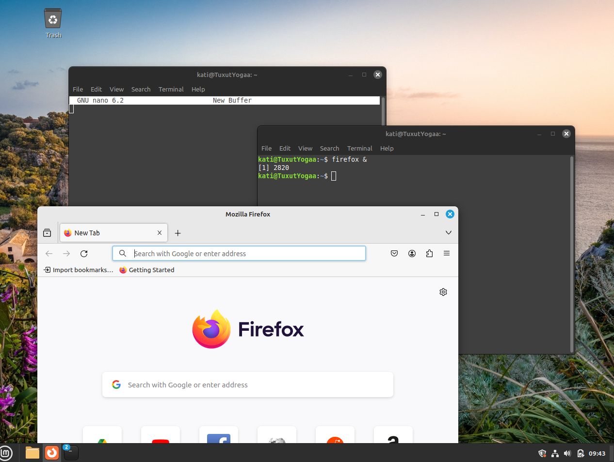
-
Selvitin prosessien ID numeroita ja prioriteetteja graafisessa sekä komentorivin kautta. Graafinen käyttöympäristö oli mielestäni tässä asiassa helpompi ymmärtää, koska siellä näkyi selkeästi id numero ja prioriteetti.
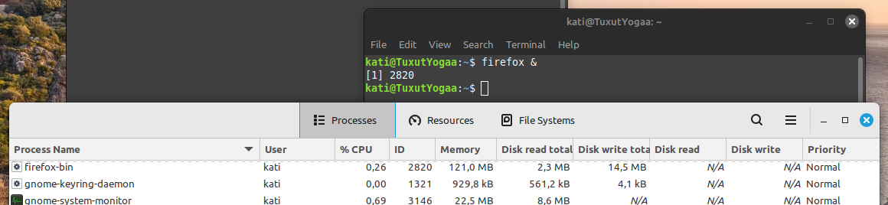
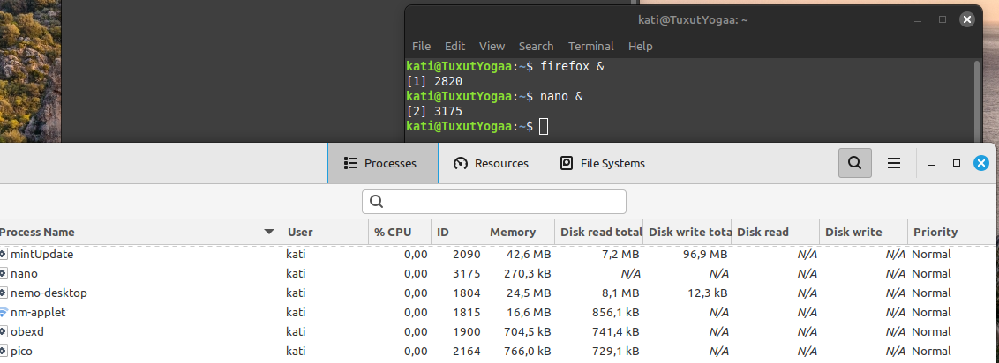
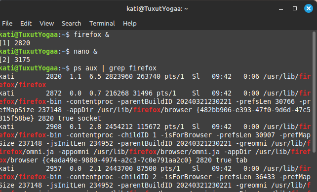
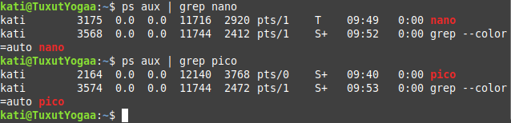
-
Muutin prosessien nice-arvoja korkeamman prioriteetin arvoiksi komentorivillä ja graafisessa ympäristössä. Nano prioriteetille Very high komentorivillä ja graafisessa Firefox prioriteetille High.
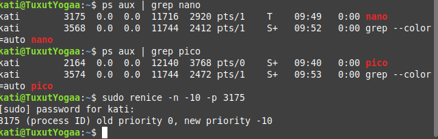
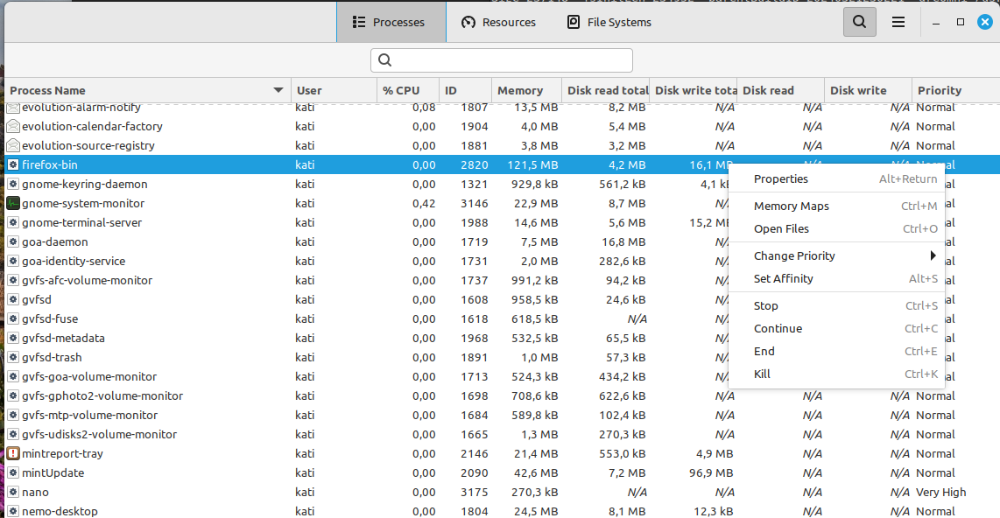
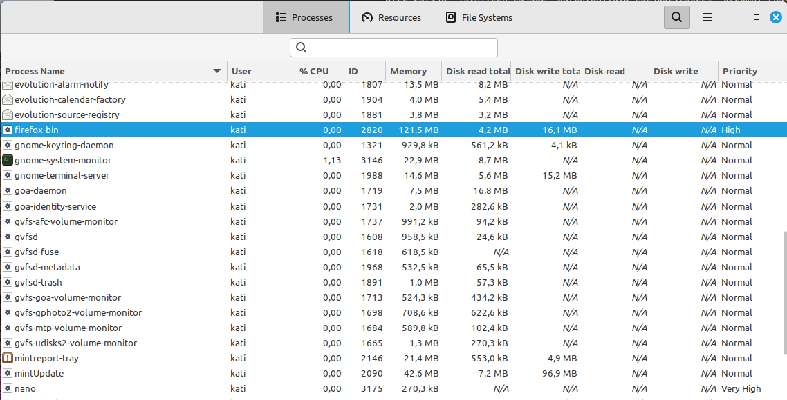
-
Lopetin prosesseja komentorivillä, käyttäen kill-komentoa. Käytin seuraavia kill-komentoja.
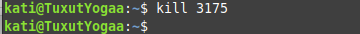
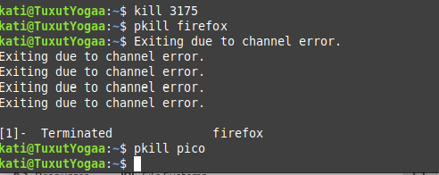
-
Etsin käynnistämiäni sovelluksia prosessilistauksesta yhdellä grep-komennolla, mutta koska olin lopettanut jo paljon ohjelmia niin tuloksia löytyi todella vähän.
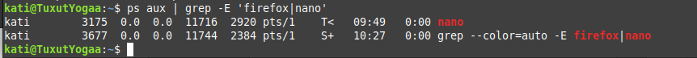
-
Lopettaisin ne yhdellä komennolla tällä tavalla:
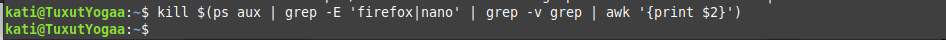
Ajastukset
Loin crontabiin joukon pyydettyjä ajastuksia.
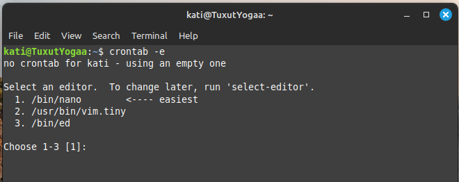
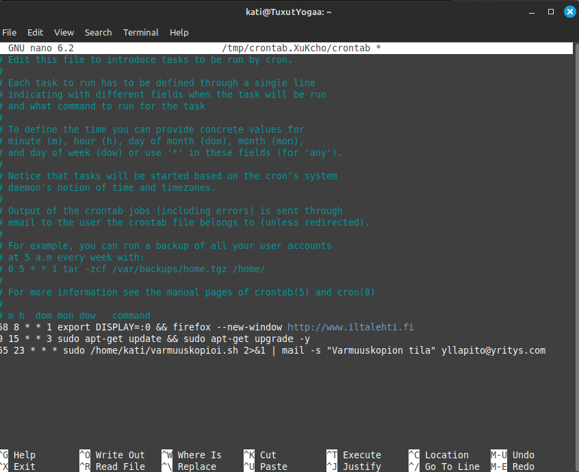
- Maanantaisin klo 8:58:
export DISPLAY=:0 && firefox --new-window http://www.iltalehti.fi
- Keskiviikkoisin klo 15:00:
sudo apt-get update && sudo apt-get update -y
- Joka päivä klo 23:55:
varmuuskopioi.sh